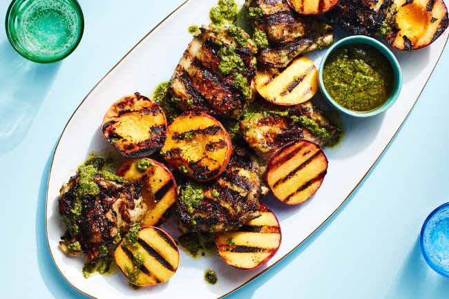

Запеченный цыпленок с соусом песто и персиками
Порции: 4
Время подготовки: 20мин
Время приготовления: 1час
Ингредиенты
1) 8 шт Куриные бедрышки с костью и кожей
2) 300 гр Соус песто
3) 120 мл Растительное масло
4) по вкусу Соль
5) 3/4 по вкусу Черный молотый перец
6) 4 шт Персики
Процесс приготовления
1. Перемешать соус песто, растительное масло, соль и перец в миске.
Выложить в соус куриные бедрышки и тщательно натереть их маринадом, вкладывая
маринад и под кожу. Закрыть миску крышкой или затянуть пленкой и оставить
мариноваться минимум на 1 час, а лучше на ночь.
2. Персики разрезать пополам и удалить косточки.
3. Разогреть духовку или подготовить угли в мангале или котле барбекю.
4. Куриные бедрышки достать из маринада, досолить и доперчить по вкусу.
Выложить на сковородку или на решетку кожей вниз и жарить 5-9 минут (в зависимости от
нагрева в духовке готовить нужно примерно в 2 раза дольше). Затем перевернуть бедрышки
и дожарить до готовности со второй стороны. Переложить куски курицы на тарелку.
5. Половинки персиков смазать растительным маслом. Выложить на сковородку гриль
или на решетку и слегка поджарить со стороны среза примерно 3 минуты.
6. Смешать 50 мл соуса песто с растительным маслом. Выложить в соусник.
7. Выложить на блюдо курицу, персики, соусник с песто и подать на стол.